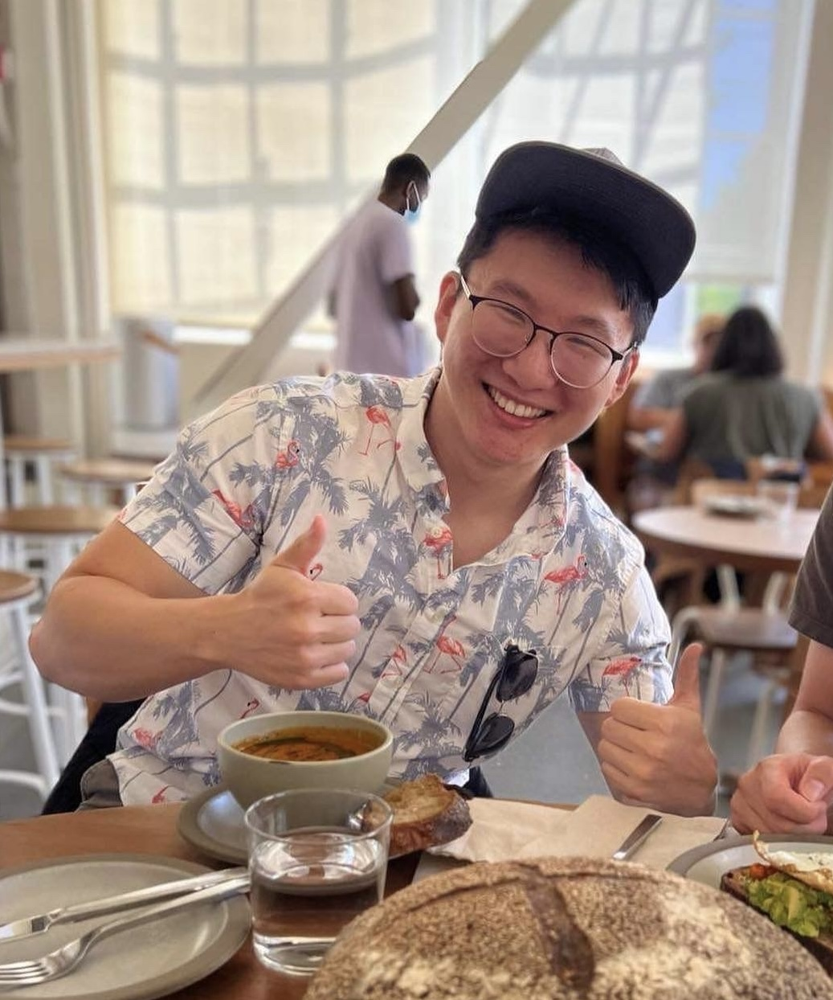

LOUIS YE
SOFTWARE ENGINEER
Games and AI tools, shipped on the side
[ ABOUT ME ]
I build evaluation and autorating infrastructure in the AI Data organization at Google, where my work decides how millions of model outputs get judged. Outside of that I ship things: Gaslight Parlor, a social bluffing game live on the iOS App Store; Kanjion, a daily browser puzzle about instructing an AI agent in six lines; and Tenth Spring, a privacy-first RPG whose map you unlock by actually going places. I like small games with one sharp idea, and I like finishing them. Off the keyboard: indoor rock climbing, local co-op games, and too much manhwa.
[ PROJECT 01 — SHIPPED ]
GASLIGHT PARLOR
iOS · v1.2A party game about forging your friends
Everyone writes a fake answer to someone else's personal prompt, then the table votes on which story is the real one. Shipped end to end: App Store release, Victorian-parlor art direction, and the live room sync underneath it.
[ PROJECT 02 — LIVE ]
KANJION 漢字音
Web · dailySix lines to steer an AI agent
You watch a looping replay of a booking made on a sandboxed clone of a Japanese rail site, then get six 60-character instructions to make an AI agent reproduce it. Copy-paste and manual clicking are off, so describing what you saw is the only move.
[ PROJECT 03 — IN DEV ]
TENTH SPRING
Godot · GDScriptYour map is the places you have actually been
A creature-collection RPG for PC set a generation after a collapse. Tap "Explore Here" on the phone companion and the real city you are standing in opens on a fog-covered map — real life opens the doors, and everything behind them is earned by playing.
[ ON THE WORKBENCH ]
ANIMATED INFOGRAPHICS
PythonTurns narration into animated explainer videos, local-first, with live generation as the goal.
PROXIMITY SWARM
PythonCoordinates a swarm of autonomous agents working one long task together.
STORYARC
FlutterTurns a day of spoken conversation into a cinematic life story.
SOCIAL ROBOTICS
ExploratoryTested whether human reactions on video could act as unlabeled reward signals for robots. Inconclusive; parked.
[ DAY JOB ]
Software Engineer, AI Data | Mountain View, CA
- Autorating: Architected a Spanner multi-queue router for batch and safety autoraters (5x, to 200k+ evals/day) and merged two LLM-as-a-judge stacks onto one C++ engine, cutting rubric false positives 47%.
- Human-in-the-loop: Shipped autorater pre-seeding at 200k+ questions/mo with 4h deadlines and human fallback, plus native audio and video autorating across every task plugin type.
- Support Intelligence: Put a learned snippet-ranking model into the team's RAG stack and benchmarked Gemini Flash for factuality and safety.
[ PAST EXPERIENCE ]
IBM
2021Extreme Blue Software Engineer Intern
Prototyped a live dashboard tracking millions of dollars of shipments across IBM's supply chain, with ML models predicting ETAs to a 10% MAPE.
CARLETON COLLEGE
2019–2022CS Researcher
Coded contextual Multi-Armed Bandit algorithms and modeled learning outcomes from student behavioral logs.
LOCL.IO
2018Software Developer Intern
Wrote an ID3 Decision Tree algorithm for consulting local businesses based on engagement data.
[ EDUCATION ]
CARLETON COLLEGE
B.A. Computer Science & Economics
Coursework: Artificial Intelligence, Natural Language Processing, Distributed Systems, Advanced Algorithms, Statistical Inference, Quantum Computing.